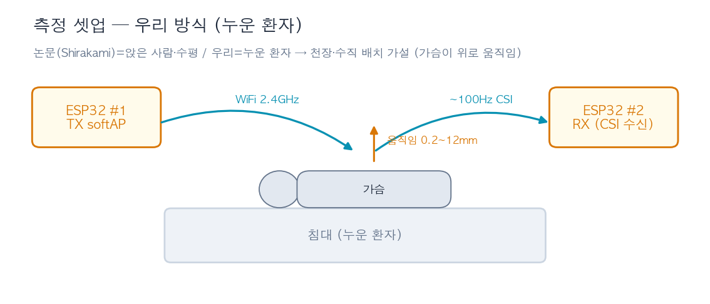
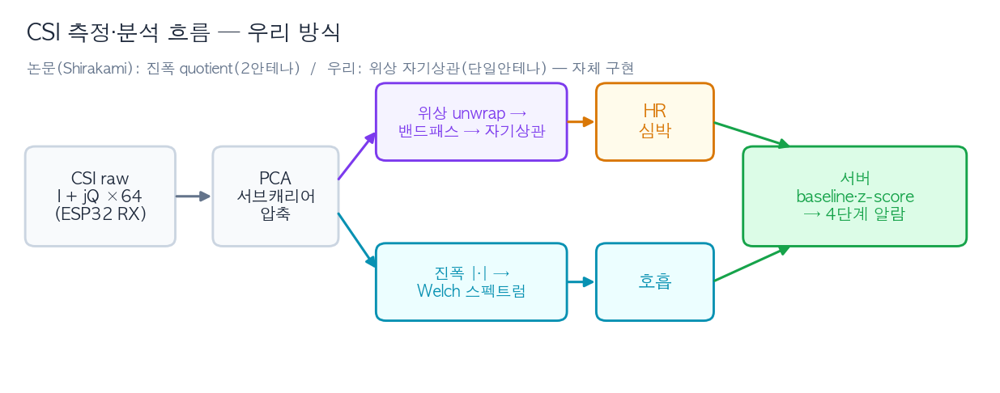
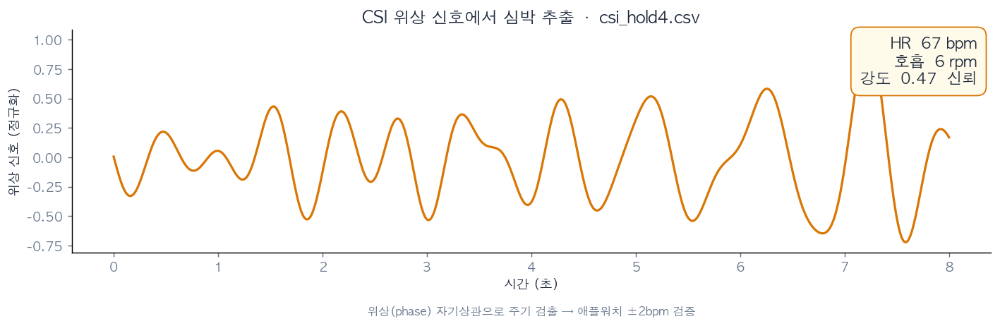
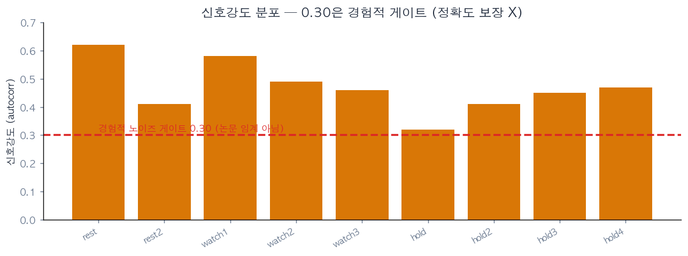
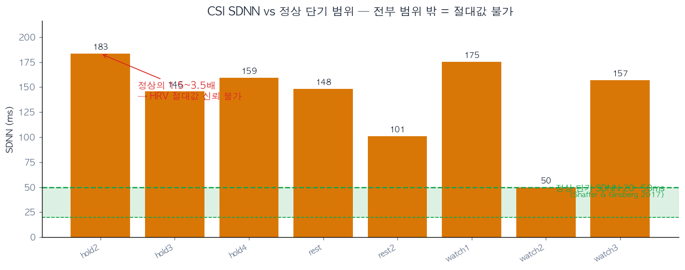

MAJUBOM · 중간 발표
마주봄.
비접촉 낙상 예방 모니터링
아무것도 몸에 붙이지 않고, WiFi CSI · ToF · mmWave 3센서로 요양병원 환자를 24시간 지켜보며 낙상 위험을 미리 알린다.
CSI · 심박/호흡
ToF · 침상 이탈
mmWave · 보행
서버 · z-score 판정
📷대표 이미지 / 시스템 사진
팀 마주봄 · 2026
01 · 우리가 뭘 만드나
침대 옆 3센서 → 서버가 판정 → 간호사 화면
측정은 임베디드(센서)가, 판정·표출은 서버가 — 역할을 나눴다. 3센서가 같은 형식으로 측정값만 보내면 서버가 평소 대비 변화로 위험을 매긴다.
CSI · 심박/호흡
WiFi 신호 변화로 가슴 움직임 → 심박·호흡·자율신경 추세
ToF · 침상 이탈
침대 위 거리 격자로 "사람이 침대에 있나/없나"
mmWave · 보행
레이더로 위치·속도·보행 변동성 → 낙상 예측
3센서 측정 →
서버 · baseline·z-score·판정 →
실시간 대시보드
슬로건 — "임베디드 = 측정, 서버 = 판정·표출"
02 · 지금, 돌아갑니다 🔴 LIVE
통합 실시간 대시보드
3센서 → POST(raw+quality+presence) → 서버 z-score → 4단계 알람 → 2초 폴링 표출
03 · 데이터 흐름 · 공통 계약
3센서 공통 형식 → 서버가 위험을 매긴다
| raw | quality | presence |
|---|
| 실제 측정값 (심박·호흡·거리·속도) | 신뢰도 (reliable·샘플수) | 재실 (1명/2명·gate) |
서버 판정 흐름 — 단계를 클릭해 보세요:
정상 <2
주의 2~4
경고 4~6
위험 ≥6
04 · 센서 진행 · ToF 조우진
침상 재실(이탈) 감지 — 작동 중
- VL53L5CX × 2, 침대 양쪽 레일에서 아래로
- 4×4 @ 400kHz 모니터 없이 끊김 없는 안정 수신
- 2중 노이즈 필터 — 센서단(유효존) + 서버단(150mm·4존·연속 3프레임)
- 재실 판정 + 빈 침대 캘리브레이션 작동
POST /tof/tof/calibrate침상 있음/비어있음
트러블슈팅: 8×8/100kHz wedge → 4×4/400kHz 복원 (향후 8×8 전환)
05 · 센서 진행 · mmWave 유현기
보행 분석 — 작동 중
- IWR6843AOP → Pi 5 USB 직결, 3D People Tracking 펌웨어
- 설치 조건별 cfg 3종(wall_chest·ceiling·legs)
- TLV 파싱 → 위치·속도 → 보행지표(보폭·변동성)
- 서버 z-score 위험도 + 포인트클라우드 시각화
POST /mmw/mmw/viz보행 변동성
트러블슈팅: 플래싱 SOP·cfg CRLF·CLI/DATA 포트 교체로 해결
06 · CSI · 측정 방식 박형석
어떻게 측정하나 — 논문 방식을 우리 셋업으로


논문(Shirakami)의 진폭 quotient는 안테나 2개 필요 → 단일안테나인 우리는 위상 자기상관(자체 구현). 실제 하드웨어 사진은 별도 첨부 📷
06 · CSI · 측정 결과 박형석
CSI 측정 — "되는 것"과 "검증된 것"을 나눠서
✅ 검증됨 — 통제 환경 ±2bpm
- 숨참기·에어컨off 통제에서 애플워치 ±2bpm 일치
- 위상 자기상관으로 심박 주기 검출 (csi_hold4)
- → 자신 있게 말할 수 있는 유일한 정확도 주장

△ 측정은 됨 — 정확도는 별개
- 9회 전부 신호 수신 — 0.30은 경험적 게이트 (논문 임계 아님)
- 신호 잡힘 ≠ 정확 — 통제 밖 정확도는 미검증
- 품질-선택 자체는 논문 계열(HSR·SDNN선택), 임계값만 우리 경험값

⚠️ 평균(예: HR 71)은 서로 다른 측정을 뭉갠 값이라 의미 없음 → 일부러 뺐다. "검증된 1건 vs 신호만 잡힌 9건"으로 분리.
06 · CSI · 한계와 방향 박형석
한계와 방향 — 숨기지 않고
⚠️ 한계
- HRV 절대값(SDNN ms) 불가 — CSI 50~183ms vs 정상 단기 20~50ms(Shaffer&Ginsberg 2017) = 최대 3.7배 범위 밖
- 방법 바꿔도 100~180ms대 = 일관되게 비정상
- 일상 HR 5~18bpm 오차 · 최강신호 선택 편향 인정
- 원인: 박동단위 정제(quotient)는 한 칩 안테나 2개 필요

→ 방향
- ① 추세 z-score 전환 — 이미 작동 (자율신경 변화 = 신청서 핵심)
- ② 다중안테나 PoC (QCA9300/AX210) — 절대 HRV 검증
- ③ 외장 지향성 안테나(WROOM-1U) — 일상 HR 정확도 ↑
- ④ 30일 롤링 baseline(이상탐지 표준) + z-score 2σ/3σ(통계 표준)로 기준 근거 정립
핵심 — "안 되는 게 아니라, 절대 HRV만 단일안테나로 어렵다. 추세로 우회 + 하드웨어로 확장."
08 · 향후 로드맵
여기까지 왔고, 다음은 이렇게
● CSI
- 다중안테나 PoC (절대 HRV 검증)
- 외장 지향성 안테나 비교 측정
- 30일 베이스라인 누적
공통 — WiFiManager(재플래시 없이 망 변경) · MQTT 무선화 · 3센서 융합 위험판정 고도화
마주봄 — 임베디드 3종 + 서버가 한 시스템으로 묶여 "지금 돌아간다". 다음은 정밀도·확장·무선화.